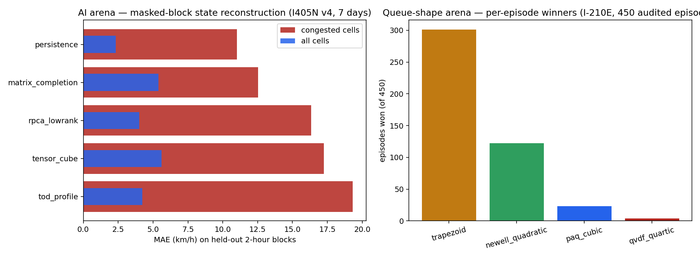

Rerun:
python -m cbi_pipeline.ai_arena --json <compact.json> --mode blocks --out benchmarks/engine_comparison
· python -m cbi_pipeline.engine_arena <run_dir> --json <compact.json>AI arena — masked-block reconstruction (I405N v4 sample, 30% masked, 2-h blocks)
| source | mask_frac | mask_mode | engine | status | mae_all_kmh | rmse_all_kmh | mae_congested_kmh | n_cells | n_congested |
|---|---|---|---|---|---|---|---|---|---|
| v4_I405N.json | 0.3 | blocks | persistence | ok | 2.33 | 5.06 | 11.01 | 33312.0 | 1513.0 |
| v4_I405N.json | 0.3 | blocks | matrix_completion | ok | 5.39 | 8.26 | 12.53 | 33312.0 | 1513.0 |
| v4_I405N.json | 0.3 | blocks | rpca_lowrank | ok | 4.02 | 8.83 | 16.33 | 33312.0 | 1513.0 |
| v4_I405N.json | 0.3 | blocks | tensor_cube | ok | 5.62 | 7.29 | 17.25 | 33312.0 | 1513.0 |
| v4_I405N.json | 0.3 | blocks | tod_profile | ok | 4.23 | 8.77 | 19.32 | 33312.0 | 1513.0 |
| v4_I405N.json | 0.3 | blocks | pinn_tse | SKIPPED (torch coupling pending) | nan | nan | nan | nan | nan |
Queue-shape arena — per-episode winners (I-210E, 450 episodes)
| shape_engine | episodes_won |
|---|---|
| trapezoid | 301 |
| newell_quadratic | 122 |
| paq_cubic | 23 |
| qvdf_quartic | 4 |
Figure

How to read the results (teaching points):
(1) Masking geometry decides the AI winner — with random single cells, interpolation is unbeatable
(0.53 km/h); with realistic 2-h dark blocks its congested-cell error grows 7× (11.0 km/h) and completion
families close in (matrix completion 12.5). (2) Training span matters — on a 7-day sample the
completion/tensor families are rank-starved; rerun on the full month before drawing conclusions.
(3) No queue shape wins everywhere — trapezoid takes oversaturated episodes (301/450), quadratic the
mild ones (122). (4) PINN is registered and SKIPPED unless torch is present — coupling via the corridor
contract is the staged next step (ENGINES.md).